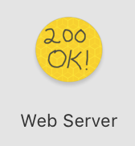
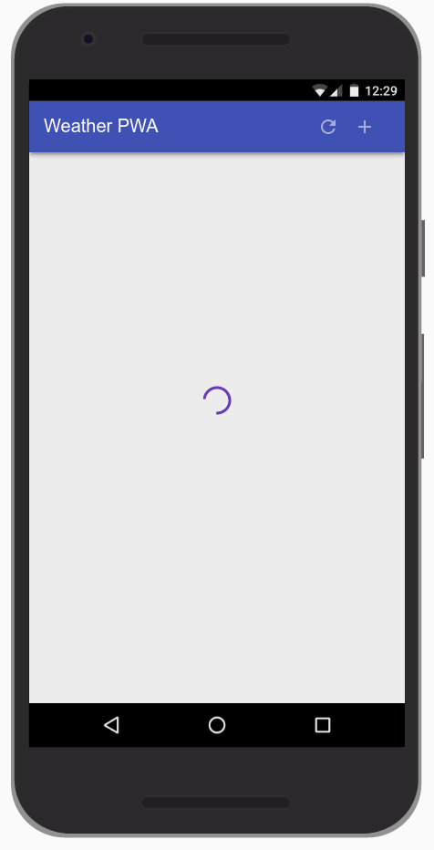
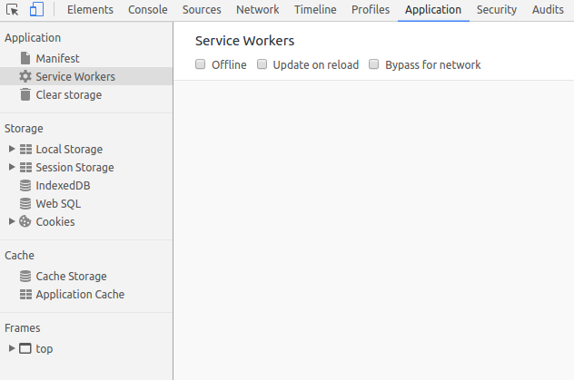
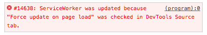
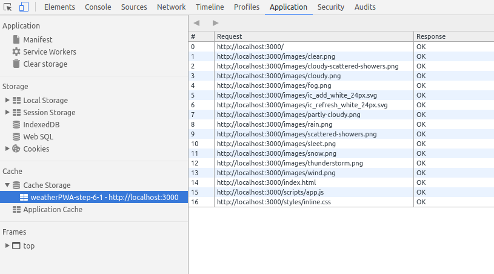

Ce codelab est un exemple pas à pas de conception d'une application web AR. Elle utilise JavaScript pour réaliser le rendu de modèles 3D qui apparaissent comme s'ils existaient dans la réalité.
Vous allez utilisez l'API en cours de développement WebXR, (l'API qui succède à l'API WebVR), qui combine les fonctionnalitées de la réalité augmentée (AR) et la réalité virtuelle (VR). Nous allons nous focaliser sur les extensions expérimentales AR de l'API WebXR Device qui sont en développement dans Chrome.

Qu'est-ce que la réalité augmentée?
La réalitée augmentée (AR) est un terme généralement utilisé pour décrire le mélange de graphiques générés par ordinateur avec le monde réel, ce qui, dans le cas de la réalité augmentée avec un téléphone, veut dire placer de manière convaincante un graphique générée par ordinateur au-dessus du flux vidéo de l'appareil photo. Pour que cet effet reste convaincant même quand le téléphone bouge, le téléphone doit connaître l'environnement dans lequel il évolue, c'est-à-dire détecter les surfaces et estimer l'éclairage ambiant. En complément, le téléphone doit également déterminer sa "position" et son "orientation" dans ces environnement réel en 3 dimensions.
L'usage de la réalité augmentée est en constante augmentation, et avec un usage grandissant dans des applications populaires comme les filtres de "selfies" ou de jeux AR. Aujourd'hui, le parc comprend des centaines de millions de téléphone compatibles avec la réalité augmentée, seulement un an après la sortie d'ARCore, la plateforme de réalité augmentée de Google, et ARKit d'Apple. Avec cette technologie maintenant dans les mains de millions de personne, les propositions d'extensions AR de l'API WebXR peuvent être implémentées derrière des drapeaux dans les navigateurs.
Ce que vous allez concevoir
|
Dans ce codelab, nous allons concevoir une application qui va vous permettre de prévisualiser des plats dans un restaurant, en plaçant au-dessus de votre assiette un modèle en utilisant la réalité augmentée. Votre application va :
|
|

Ce que vous allez apprendre
- Comment utiliser l'API WebXR
- Comment trouver une surface en utilisant les tests de collisions de la réalité augmentée
- Comment charger et afficher un modèle 3D synchronisé avec le flux vidéo de l'appareil photo
Ce codelab est focalisé sur les APIs de réalité augmentée. Les concepts externes et non pertinents ne seront pas expliqués ici et fournis tel quel dans le dépôt de code.
L'API WebXR est en cours de développement et soumise régulièrement à des changements. Ce codelab a été testé avec la version 74+ de Chrome Canary/Dev.
Ce dont vous avez besoin
Ceci est un aperçu de tout ce dont vous avez besoin, et nous verrons tout ceci en détail après :
- un PC de développement et un serveur local d'hébergement type Apache, nginx ou http-server (au travers de Node.js/npm)
- un téléphone compatible ARCore tournant sous Android 8.0 Oreo
- ARcore installé sur le téléphone (Chrome vous proposera de l'installer)
- Chrome Canary. Utilisez une version >= 74, et utilisez la version Canary ou "Dev build" (les branchements ARCore ne sont pas encore livrés sur les versions beta/prod)
- Web Server pour Chrome, ou votre propre serveur web
- un câble USB reliant votre téléphone à votre PC
- l'exemple de code du codelab
- un éditeur de code
- des connaissances en HTML, CSS, JavaScript et Chrome Devtools
Obtenez Chrome et ses fonctionnalités AR
A l'heure de l'écriture de ce codelab, les fonctionnalités AR sont implémentées dans Chrome Canary à partir de la version 70.
Vous pouvez y accéder dans Paramètres -> A propos de Chrome et voir la version de Chrome que vous utilisez.
S'assurer que les fonctionnalités AR sont activées dans Chrome
A l'heure de l'écriture de ce codelab, les fonctionnalités AR sont implémentées derrière les drapeaux webxr et webxr-hit-test. Pour activer le support de l'API WebXR dans Chrome :
- vérifiez que votre téléphone fonctionne bien sous Android 8.0 Oreo
- vérifiez que votre téléphone est bien compatible ARCore ici
- vérifiez que votre version de Chrome est >= 74
- tapez
chrome://flagsdans la barre d'adresse - tapez
webxrdans le champ de recherche des drapeaux - activez le drapeau WebXR Device API (
#webxr)
- note : ignorez le drapeau WebVR (
#enable-webvr)
- activez le drapeau WebXR Hit Test (
#webxr-hit-test) - redémarrez Chrome pour vous assurez que les drapeaux sont actifs

Visitez le lien ci-dessous sur votre téléphone pour essayer l'étape 1 du codelab. Si vous obtenez une page avec un message "Votre navigateur ne comporte pas les fonctionnalités AR", re-vérifiez la version de Chrome Canary et les drapeaux WebXR, qui requiert un redémarrage du navigateur.
Téléchargez le code source du codelab
Cliquez sur le lien ci-dessous pour téléchargez le code source du codelab sur votre PC :
Dé-zippez ce fichier. Vous allez obtenir un dossier (webxr-codelab), qui contient dans des
dossiers les différentes étapes du codelab, avec des ressources communes associées.
Les dossiers etape-NN contiennent les sources pour les étapes correspondantes du codelab. Ils
sont là pour référence.
Nous allons démarrer le codelab avec le dossier work.
Install and verify web server
While you're free to use your own web server, this codelab is designed to work well with the Chrome Web Server. If you don't have that app installed yet, you can install it from the Chrome Web Store.
After installing the Web Server for Chrome app, click on the Apps shortcut on the bookmarks bar:
In the ensuing window, click on the Web Server icon:

You'll see this dialog next, which allows you to configure your local web server:

Click the choose folder button, and select the work folder. This will enable you
to serve your work in progress via the URL highlighted in the web server dialog (in the Web Server
URL(s) section).
Under Options, check the box next to "Automatically show index.html", as shown below:

Then stop and restart the server by sliding the toggle labeled "Web Server: STARTED" to the left and then back to the right.

Now visit your work site in your web browser (by clicking on the highlighted Web Server URL) and you should see a page that looks like this:

This app is not yet doing anything interesting - so far, it's just a minimal skeleton with a spinner we're using to verify your web server functionality. We'll add functionality and UI features in subsequent steps.
What is the app shell?
The app's shell is the minimal HTML, CSS, and JavaScript that is required to power the user interface of a progressive web app and is one of the components that ensures reliably good performance. Its first load should be extremely quick and immediately cached. "Cached" means that the shell files are loaded once over the network and then saved to the local device. Every subsequent time that the user opens the app, the shell files are loaded from the local device's cache, which results in blazing-fast startup times.
App shell architecture separates the core application infrastructure and UI from the data. All of the UI and infrastructure is cached locally using a service worker so that on subsequent loads, the Progressive Web App only needs to retrieve the necessary data, instead of having to load everything.
A service worker is a script that your browser runs in the background, separate from a web page, opening the door to features that don't need a web page or user interaction.

Put another way, the app shell is similar to the bundle of code that you'd publish to an app store when building a native app. It is the core components necessary to get your app off the ground, but likely does not contain the data.
Why use the App Shell architecture?
Using the app shell architecture allows you to focus on speed, giving your Progressive Web App similar properties to native apps: instant loading and regular updates, all without the need of an app store.
Design the App Shell
The first step is to break the design down into its core components.
Ask yourself:
- What needs to be on screen immediately?
- What other UI components are key to our app?
- What supporting resources are needed for the app shell? For example images, JavaScript, styles, etc.
We're going to create a Weather app as our first Progressive Web App. The key components will consist of:
|
|
When designing a more complex app, content that isn't needed for the initial load can be requested later and then cached for future use. For example, we could defer the loading of the New City dialog until after we've rendered the first run experience and have some idle cycles available.
There are multiple ways to get started with any project, in this case, to keep our project as simple as possible and concentrate on Progressive Web Apps, we've provided you with all of the resources you'll need.
Create the HTML for the App Shell
Now we'll add the core components we discussed in Architect the App Shell.
Remember, the key components will consist of:
- Header with a title, and add/refresh buttons
- Container for forecast cards
- A forecast card template
- A dialog for adding new cities
- A loading indicator
The index.html file that is already in your work directory should look something
like this (this is a subset of the actual contents, don't copy this code into your file):
<!DOCTYPE html>
<html>
<head>
<meta charset="utf-8">
<meta http-equiv="X-UA-Compatible" content="IE=edge">
<meta name="viewport" content="width=device-width, initial-scale=1.0">
<title>Weather PWA</title>
<link rel="stylesheet" type="text/css" href="styles/inline.css">
</head>
<body>
<header class="header">
<h1 class="header__title">Weather PWA</h1>
<button id="butRefresh" class="headerButton"></button>
<button id="butAdd" class="headerButton"></button>
</header>
<main class="main">
<div class="card cardTemplate weather-forecast" hidden>
. . .
</div>
</main>
<div class="dialog-container">
. . .
</div>
<div class="loader">
<svg viewBox="0 0 32 32" width="32" height="32">
<circle id="spinner" cx="16" cy="16" r="14" fill="none"></circle>
</svg>
</div>
<!-- Insert link to app.js here -->
</body>
</html>Notice the loader is visible by default. This ensures that the user sees the loader immediately as the page loads, giving them a clear indication that the content is loading.
To save time, we've also already created the stylesheet for you to use.
Check out the key JavaScript app code
Now that we have most of the UI ready, it's time to start hooking up the code to make everything work. Like the rest of the app shell, be conscious about what code is necessary as part of the key experience and what can be loaded later.
Your work directory also already includes the app code (scripts/app.js), in it you'll find:
- An
appobject that contains some of the key information necessary for the app. - The event listeners for all of the buttons in the header (
add/refresh) and in the add city dialog (add/cancel). - A method to add or update forecast cards (
app.updateForecastCard). - A method to get the latest weather forecast data from the Firebase Public Weather API (
app.getForecast). - A method to iterate the current cards and call
app.getForecastto get the latest forecast data (app.updateForecasts). - Some fake data (
initialWeatherForecast) you can use to quickly test how things render.
Test it out
Now that you've got the core HTML, styles and JavaScript, it's time to test the app.
To see how the fake weather data is rendered, uncomment the following line at the bottom of your index.html
file:
<!--<script src="scripts/app.js" async></script>-->
Next, uncomment the following line at the bottom of your app.js file:
// app.updateForecastCard(initialWeatherForecast);
Reload your app. The result should be a nicely formatted (though fake, as you can tell by the date) forecast card with the spinner disabled, like this:

Once you've tried it and verified it works as expected, you can remove the call to app.updateForecastCard
with the fake data again. We only needed it to ensure that everything worked as expected.
Progressive Web Apps should start fast and be usable immediately. In its current state, our Weather App starts quickly, but it's not useable. There's no data. We could make an AJAX request to get that data, but that results in an extra request and makes the initial load longer. Instead, provide real data in the first load.
Inject the weather forecast data
For this code lab, we'll simulate the server injecting the weather forecast directly into the JavaScript, but in a production app, the latest weather forecast data would be injected by the server based on the IP address geo-location of the user.
The code already contains the data that we're going to inject. It's the initialWeatherForecast
that we used in the previous step.
Differentiating the first run
But, how do we know when to display this information, which may not be relevant on future loads when the weather app is pulled from the cache? When the user loads the app on subsequent visits, they may have changed cities, so we need to load the information for those cities, not necessarily the first city they ever looked up.
User preferences, like the list of cities a user has subscribed to, should be stored locally using IndexedDB
or another fast storage mechanism. To simplify this code lab as much as possible, we've used localStorage, which is not ideal for production apps because it is a
blocking, synchronous storage mechanism that is potentially very slow on some devices.
First, let's add the code required to save user preferences. Find the following TODO comment in your code.
// TODO add saveSelectedCities function hereAnd add the following code below the comment.
// Save list of cities to localStorage.
<HIGHLIGHT>app.saveSelectedCities = function() {</HIGHLIGHT>
var selectedCities = JSON.stringify(app.selectedCities);
localStorage.selectedCities = selectedCities;
};Next, let's add the startup code to check if the user has any saved cities and render those, or use the injected data. Find the following comment:
// TODO add startup code hereAnd add the following code below this comment:
/************************************************************************
*
* Code required to start the app
*
* NOTE: To simplify this codelab, we've used localStorage.
* localStorage is a synchronous API and has serious performance
* implications. It should not be used in production applications!
* Instead, check out IDB (https://www.npmjs.com/package/idb) or
* SimpleDB (https://gist.github.com/inexorabletash/c8069c042b734519680c)
************************************************************************/
app.selectedCities = localStorage.selectedCities;
if (app.selectedCities) {
app.selectedCities = JSON.parse(app.selectedCities);
app.selectedCities.forEach(function(city) {
app.getForecast(city.key, city.label);
});
} else {
/* The user is using the app for the first time, or the user has not
* saved any cities, so show the user some fake data. A real app in this
* scenario could guess the user's location via IP lookup and then inject
* that data into the page.
*/
app.updateForecastCard(initialWeatherForecast);
app.selectedCities = [
{key: initialWeatherForecast.key, label: initialWeatherForecast.label}
];
app.saveSelectedCities();
}The startup code checks if there are any cities saved in local storage. If so, then it parses the local storage data and then displays a forecast card for each of the saved cities. Else, the startup code just uses the fake forecast data and saves that as the default city.
Save the selected cities
Finally, you need to modify the "add city" button handler to save the selected city to local storage.
Update your butAddCity click handler so that it matches the following code:
document.getElementById('butAddCity').addEventListener('click', function() {
// Add the newly selected city
var select = document.getElementById('selectCityToAdd');
var selected = select.options[select.selectedIndex];
var key = selected.value;
var label = selected.textContent;
if (!app.selectedCities) {
app.selectedCities = [];
}
app.getForecast(key, label);
app.selectedCities.push({key: key, label: label});
app.saveSelectedCities();
app.toggleAddDialog(false);
});The new additions are the initialization of app.selectedCities if it doesn't exist, and the
calls to app.selectedCities.push() and app.saveSelectedCities().
Test it out
- When first run, your app should immediately show the user the forecast from
initialWeatherForecast. - Add a new city (by clicking the + icon on the upper right) and verify that two cards are shown.
- Refresh the browser and verify that the app loads both forecasts and shows the latest information.
Progressive Web Apps have to be fast, and installable, which means that they work online, offline, and on intermittent, slow connections. To achieve this, we need to cache our app shell using service worker, so that it's always available quickly and reliably.
If you're unfamiliar with service workers, you can get a basic understanding by reading Introduction To Service Workers about what they can do, how their lifecycle works and more. Once you've completed this code lab, be sure to check out the Debugging Service Workers code lab for a more indepth look at how to work with service workers.
Features provided via service workers should be considered a progressive enhancement, and added only if supported by the browser. For example, with service workers you can cache the app shell and data for your app, so that it's available even when the network isn't. When service workers aren't supported, the offline code isn't called, and the user gets a basic experience. Using feature detection to provide progressive enhancement has little overhead and it won't break in older browsers that don't support that feature.
Register the service worker if it's available
The first step to making the app work offline is to register a service worker, a script that allows background functionality without the need for an open web page or user interaction.
This takes two simple steps:
- Tell the browser to register the JavaScript file as the service worker.
- Create a JavaScript file containing the service worker.
First, we need to check if the browser supports service workers, and if it does, register the service worker.
Add the following code to app.js (after the // TODO add service worker code here
comment):
if ('serviceWorker' in navigator) {
navigator.serviceWorker
.register('./service-worker.js')
.then(function() { console.log('Service Worker Registered'); });
}Cache the site assets
When the service worker is registered, an install event is triggered the first time the user visits the page. In this event handler, we will cache all the assets that are needed for the application.
When the service worker is fired, it should open the caches object and populate it with the assets necessary to load the App
Shell. Create a file called service-worker.js in your application root folder (which should be
your-first-pwapp-master/work directory). This file must live in the application root because the
scope for service workers is defined by the directory in which the file resides. Add this code to your new
service-worker.js file:
var cacheName = 'weatherPWA-step-6-1';
var filesToCache = [];
self.addEventListener('install', function(e) {
console.log('[ServiceWorker] Install');
e.waitUntil(
caches.open(cacheName).then(function(cache) {
console.log('[ServiceWorker] Caching app shell');
return cache.addAll(filesToCache);
})
);
});First, we need to open the cache with caches.open() and provide a cache name. Providing a cache
name allows us to version files, or separate data from the app shell so that we can easily update one but not
affect the other.
Once the cache is open, we can then call cache.addAll(), which takes a list of URLs, then fetches
them from the server and adds the response to the cache. Unfortunately, cache.addAll() is atomic,
if any of the files fail, the entire cache step fails!
Alright, let's start getting familiar with how you can use DevTools to understand and debug service workers. Before reloading your page, open up DevTools, go the Service Worker pane on the Application panel. It should look like this.

When you see a blank page like this, it means that the currently open page does not have any registered service workers.
Now, reload your page. The Service Worker pane should now look like this.

When you see information like this, it means the page has a service worker running.
OK, now we're are going to take a brief detour and demonstrate a gotcha that you may encounter when
developing service workers. To demonstrate, let's add an activate event listener below the
install event listener in your service-worker.js file.
self.addEventListener('activate', function(e) {
console.log('[ServiceWorker] Activate');
});The activate event is fired when the service worker starts up.
Open up the DevTools Console and reload the page, switch to the Service Worker pane in the Application panel
and click inspect on the activated service worker. You expect to see the [ServiceWorker] Activate
message logged to the console, but it didn't happen. Check out your Service Worker pane and you can see
that the new service worker (that includes the activate event listener) appears to be in a "waiting"
state.

Basically, the old service worker continues to control the page as long as there is a tab open to the page. So, you could close and re-open the page or press the skipWaiting button, but a longer-term solution is to just enable the Update on Reload checkbox on the Service Worker pane of DevTools. When this checkbox is enabled, the service worker is forcibly updated every time that the page reloads.
Enable the update on reload checkbox now and reload the page to confirm that the new service worker gets activated.
Note: You may see an error in the Service Worker pane of the Application panel similar to the one below, it's safe to ignore this error.

That's all for now regarding inspecting and debugging service workers in DevTools. We'll show you some more tricks later. Let's get back to building your app.
Let's expand on the activate event listener to include some logic to update the cache. Update
your code to match the code below.
self.addEventListener('activate', function(e) {
console.log('[ServiceWorker] Activate');
e.waitUntil(
caches.keys().then(function(keyList) {
return Promise.all(keyList.map(function(key) {
if (key !== cacheName) {
console.log('[ServiceWorker] Removing old cache', key);
return caches.delete(key);
}
}));
})
);
return self.clients.claim();
});This code ensures that your service worker updates its cache whenever any of the app shell files change. In
order for this to work, you'd need to increment the cacheName variable at the top of your
service worker file.
The last statement fixes a corner-case which you can read about in the (optional) information box below.
Finally, let's update the list of files required for the app shell. In the array, we need to include all
of the files our app needs, including images, JavaScript, stylesheets, etc. Near the top of your service-worker.js
file, replace var filesToCache = []; with the code below:
var filesToCache = [
'/',
'/index.html',
'/scripts/app.js',
'/styles/inline.css',
'/images/clear.png',
'/images/cloudy-scattered-showers.png',
'/images/cloudy.png',
'/images/fog.png',
'/images/ic_add_white_24px.svg',
'/images/ic_refresh_white_24px.svg',
'/images/partly-cloudy.png',
'/images/rain.png',
'/images/scattered-showers.png',
'/images/sleet.png',
'/images/snow.png',
'/images/thunderstorm.png',
'/images/wind.png'
];Our app doesn't work offline quite yet. We've cached the app shell components, but we still need to load them from the local cache.
Serve the app shell from the cache
Service workers provide the ability to intercept requests made from our Progressive Web App and handle them within the service worker. That means we can determine how we want to handle the request and potentially serve our own cached response.
For example:
self.addEventListener('fetch', function(event) {
// Do something interesting with the fetch here
});Let's now serve the app shell from the cache. Add the following code to the bottom of your service-worker.js
file:
self.addEventListener('fetch', function(e) {
console.log('[ServiceWorker] Fetch', e.request.url);
e.respondWith(
caches.match(e.request).then(function(response) {
return response || fetch(e.request);
})
);
});Stepping from inside, out, caches.match() evaluates the web request that triggered the fetch event, and checks to see if it's available in the cache. It then
either responds with the cached version, or uses fetch to get a copy from the network. The response
is passed back to the web page with e.respondWith().
Test it out
Your app is now offline-capable! Let's try it out.
Reload your page and then go to the Cache Storage pane on the Application panel of DevTools. Right click Cache Storage, pick Refresh Caches, expand the section and you should see the name of your app shell cache listed on the left-hand side. When you click on your app shell cache you can see all of the resources that it has currently cached.

Now, let's test out offline mode. Go back to the Service Worker pane of DevTools and enable the Offline checkbox. After enabling it, you should see a little yellow warning icon next to the Network panel tab. This indicates that you're offline.

Reload your page and... it works! Kind of, at least. Notice how it loads the initial (fake) weather data.

Check out the else clause in app.getForecast() to understand why the app is able to
load the fake data.
The next step is to modify the app and service worker logic to be able to cache weather data, and return the most recent data from the cache when the app is offline.
Tip: To start fresh and clear all saved data (localStorage, indexedDB
data, cached files) and remove any service workers, use the Clear storage pane in the Application tab.
Beware of the edge cases
As previously mentioned, this code must not be used in production because of the many unhandled edge cases.
Cache depends on updating the cache key for every change
For example this caching method requires you to update the cache key every time content is changed, otherwise, the cache will not be updated, and the old content will be served. So be sure to change the cache key with every change as you're working on your project!
Requires everything to be redownloaded for every change
Another downside is that the entire cache is invalidated and needs to be re-downloaded every time a file changes. That means fixing a simple single character spelling mistake will invalidate the cache and require everything to be downloaded again. Not exactly efficient.
Browser cache may prevent the service worker cache from updating
There's another important caveat here. It's crucial that the HTTPS request made during the install handler goes directly to the network and doesn't return a response from the browser's cache. Otherwise the browser may return the old, cached version, resulting in the service worker cache never actually updating!
Beware of cache-first strategies in production
Our app uses a cache-first strategy, which results in a copy of any cached content being returned without consulting the network. While a cache-first strategy is easy to implement, it can cause challenges in the future. Once the copy of the host page and service worker registration is cached, it can be extremely difficult to change the configuration of the service worker (since the configuration depends on where it was defined), and you could find yourself deploying sites that are extremely difficult to update!
How do I avoid these edge cases?
So how do we avoid these edge cases? Use a library like sw-precache, which provides fine control over what gets expired, ensures requests go directly to the network and handles all of the hard work for you.
Tips for testing live service workers
Debugging service workers can be a challenge, and when it involves caching, things can become even more of a nightmare if the cache isn't updated when you expect it. Between the typical service worker life cycle and bug in your code, you may become quickly frustrated. But don't. There are some tools you can use to make your life easier.
Start Fresh
In some cases, you may find yourself loading cached data or that things aren't updated as you expect. To clear all saved data (localStorage, indexedDB data, cached files) and remove any service workers, use the Clear storage pane in the Application tab.
Some other tips:
- Once a service worker has been unregistered, it may remain listed until its containing browser window is closed.
- If multiple windows to your app are open, the new service worker will not take effect until they've all been reloaded and updated to the latest service worker.
- Unregistering a service worker does not clear the cache, so it may be possible you'll still get old data if the cache name hasn't changed.
- If a service worker exists and a new service worker is registered, the new service worker won't take control until the page is reloaded, unless you take immediate control.
Choosing the right caching strategy for your data is vital and depends on the type of data your app presents. For example, time-sensitive data like weather or stock quotes should be as fresh as possible, while avatar images or article content can be updated less frequently.
The cache-first-then-network strategy is ideal for our app. It gets data on screen as quickly as possible, then updates that once the network has returned the latest data. In comparison to network-first-then-cache, the user does not have to wait until the fetch times out to get the cached data.
Cache-first-then-network means we need to kick off two asynchronous requests, one to the cache and one to the network. Our network request with the app doesn't need to change much, but we need to modify the service worker to cache the response before returning it.
Under normal circumstances, the cached data will be returned almost immediately providing the app with recent data it can use. Then, when the network request returns, the app will be updated using the latest data from the network.
Intercept the network request and cache the response
We need to modify the service worker to intercept requests to the weather API and store their responses in the cache, so we can easily access them later. In the cache-then-network strategy, we expect the network response to be the ‘source of truth', always providing us with the most recent information. If it can't, it's OK to fail because we've already retrieved the latest cached data in our app.
In the service worker, let's add a dataCacheName so that we can separate our applications
data from the app shell. When the app shell is updated and older caches are purged, our data will remain
untouched, ready for a super fast load. Keep in mind, if your data format changes in the future, you'll
need a way to handle that and ensure the app shell and content stay in sync.
Add the following line to the top of your service-worker.js file:
var dataCacheName = 'weatherData-v1';Next, update the activate event handler so that it doesn't delete the data cache when it
cleans up the app shell cache.
if (key !== cacheName && key !== dataCacheName) {Finally, update the fetch event handler to handle requests to the data API separately from other
requests.
self.addEventListener('fetch', function(e) {
console.log('[Service Worker] Fetch', e.request.url);
var dataUrl = 'https://query.yahooapis.com/v1/public/yql';
if (e.request.url.indexOf(dataUrl) > -1) {
/*
* When the request URL contains dataUrl, the app is asking for fresh
* weather data. In this case, the service worker always goes to the
* network and then caches the response. This is called the "Cache then
* network" strategy:
* https://jakearchibald.com/2014/offline-cookbook/#cache-then-network
*/
e.respondWith(
caches.open(dataCacheName).then(function(cache) {
return fetch(e.request).then(function(response){
cache.put(e.request.url, response.clone());
return response;
});
})
);
} else {
/*
* The app is asking for app shell files. In this scenario the app uses the
* "Cache, falling back to the network" offline strategy:
* https://jakearchibald.com/2014/offline-cookbook/#cache-falling-back-to-network
*/
e.respondWith(
caches.match(e.request).then(function(response) {
return response || fetch(e.request);
})
);
}
});
The code intercepts the request and checks if the URL starts with the address of the weather API. If it does
we'll use fetch
to make the request. Once the response is returned, our code opens the cache, clones the response, stores it in
the cache, and finally returns the response to the original requestor.
Our app won't work offline quite yet. We've implemented caching and retrieval for the app shell, but even though we're caching the data, the app doesn't yet check the cache to see if it has any weather data.
Making the requests
As mentioned previously, the app needs to kick off two asynchronous requests, one to the cache and one to the
network. The app uses the caches object available in window to access the cache and
retrieve the latest data. This is an excellent example of progressive enhancement as the caches
object may not be available in all browsers, and if it's not the network request should still work.
To do this, we need to:
- Check if the
cachesobject is available in the globalwindowobject. - Request data from the cache.
- If the server request is still outstanding, update the app with the cached data.
- Request data from the server.
- Save the data for quick access later.
- Update the app with the fresh data from the server.
Get data from the cache
Next, we need to check if the caches object exists and request the latest data from it. Find the
TODO add cache logic here comment in app.getForecast(), and then add the code below
under the comment.
if ('caches' in window) {
/*
* Check if the service worker has already cached this city's weather
* data. If the service worker has the data, then display the cached
* data while the app fetches the latest data.
*/
caches.match(url).then(function(response) {
if (response) {
response.json().then(function updateFromCache(json) {
var results = json.query.results;
results.key = key;
results.label = label;
results.created = json.query.created;
app.updateForecastCard(results);
});
}
});
}
Our weather app now makes two asynchronous requests for data, one from the cache and one via an
XHR. If there's data in the cache, it'll be returned and rendered extremely quickly (tens of
milliseconds) and update the card only if the XHR is still outstanding. Then, when the XHR responds, the card
will be updated with the freshest data direct from the weather API.
Notice how the cache request and the XHR request both end with a call to update the forecast card. How does
the app know whether it's displaying the latest data? This is handled in the following code from app.updateForecastCard:
var cardLastUpdatedElem = card.querySelector('.card-last-updated');
var cardLastUpdated = cardLastUpdatedElem.textContent;
if (cardLastUpdated) {
cardLastUpdated = new Date(cardLastUpdated);
// Bail if the card has more recent data then the data
if (dataLastUpdated.getTime() < cardLastUpdated.getTime()) {
return;
}
}Every time that a card is updated, the app stores the timestamp of the data on a hidden attribute on the card. The app just bails if the timestamp that already exists on the card is newer than the data that was passed to the function.
Test it out
The app should be completely offline-functional now. Save a couple of cities and press the refresh button on the app to get fresh weather data, and then go offline and reload the page.
Then go to the Cache Storage pane on the Application panel of DevTools. Expand the section and you should see the name of your app shell and data cache listed on the left-hand side. Opening the data cache should should the data stored for each city.
TODO